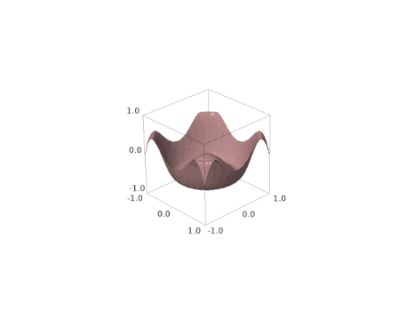
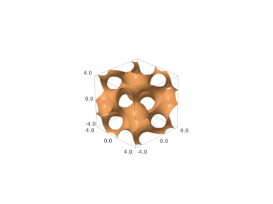
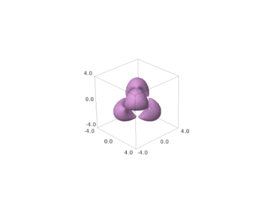

Implicit Plots¶
-
sage.plot.plot3d.implicit_plot3d.implicit_plot3d(f, xrange, yrange, zrange, **kwds)¶ Plot an isosurface of a function.
INPUT:
f– functionxrange– a 2-tuple (x_min, x_max) or a 3-tuple (x, x_min, x_max)yrange– a 2-tuple (y_min, y_max) or a 3-tuple (y, y_min, y_max)zrange– a 2-tuple (z_min, z_max) or a 3-tuple (z, z_min, z_max)plot_points– (default: “automatic”, which is 40) the number of function evaluations in each direction. (The number of cubes in the marching cubes algorithm will be one less than this). Can be a triple of integers, to specify a different resolution in each of x,y,z.contour– (default: 0) plot the isosurface f(x,y,z)==contour. Can be a list, in which case multiple contours are plotted.region– (default: None) If region is given, it must be a Python callable. Only segments of the surface where region(x,y,z) returns a number >0 will be included in the plot. (Note that returning a Python boolean is acceptable, since True == 1 and False == 0).
EXAMPLES:
sage: var('x,y,z') (x, y, z)
A simple sphere:
sage: implicit_plot3d(x^2+y^2+z^2==4, (x,-3,3), (y,-3,3), (z,-3,3)) Graphics3d Object

A nested set of spheres with a hole cut out:
sage: implicit_plot3d((x^2 + y^2 + z^2), (x,-2,2), (y,-2,2), (z,-2,2), plot_points=60, contour=[1,3,5], ....: region=lambda x,y,z: x<=0.2 or y>=0.2 or z<=0.2, color='aquamarine').show(viewer='tachyon')
A very pretty example, attributed to Douglas Summers-Stay (archived page):
sage: T = RDF(golden_ratio) sage: F = 2 - (cos(x+T*y) + cos(x-T*y) + cos(y+T*z) + cos(y-T*z) + cos(z-T*x) + cos(z+T*x)) sage: r = 4.77 sage: implicit_plot3d(F, (x,-r,r), (y,-r,r), (z,-r,r), plot_points=40, color='darkkhaki').show(viewer='tachyon')

As I write this (but probably not as you read it), it’s almost Valentine’s day, so let’s try a heart (from http://mathworld.wolfram.com/HeartSurface.html)
sage: F = (x^2+9/4*y^2+z^2-1)^3 - x^2*z^3 - 9/(80)*y^2*z^3 sage: r = 1.5 sage: implicit_plot3d(F, (x,-r,r), (y,-r,r), (z,-r,r), plot_points=80, color='red', smooth=False).show(viewer='tachyon')
The same examples also work with the default Jmol viewer; for example:
sage: T = RDF(golden_ratio) sage: F = 2 - (cos(x + T*y) + cos(x - T*y) + cos(y + T*z) + cos(y - T*z) + cos(z - T*x) + cos(z + T*x)) sage: r = 4.77 sage: implicit_plot3d(F, (x,-r,r), (y,-r,r), (z,-r,r), plot_points=40, color='deepskyblue').show()
Here we use smooth=True with a Tachyon graph:
sage: implicit_plot3d(x^2 + y^2 + z^2, (x,-2,2), (y,-2,2), (z,-2,2), contour=4, color='deepskyblue', smooth=True) Graphics3d Object
We explicitly specify a gradient function (in conjunction with smooth=True) and invert the normals:
sage: gx = lambda x, y, z: -(2*x + y^2 + z^2) sage: gy = lambda x, y, z: -(x^2 + 2*y + z^2) sage: gz = lambda x, y, z: -(x^2 + y^2 + 2*z) sage: implicit_plot3d(x^2+y^2+z^2, (x,-2,2), (y,-2,2), (z,-2,2), contour=4, ....: plot_points=40, smooth=True, gradient=(gx, gy, gz)).show(viewer='tachyon')

A graph of two metaballs interacting with each other:
sage: def metaball(x0, y0, z0): return 1 / ((x-x0)^2+(y-y0)^2+(z-z0)^2) sage: implicit_plot3d(metaball(-0.6,0,0) + metaball(0.6,0,0), (x,-2,2), (y,-2,2), (z,-2,2), plot_points=60, contour=2, color='seagreen') Graphics3d Object

One can also color the surface using a coloring function and a colormap as follows. Note that the coloring function must take values in the interval [0,1].
sage: t = (sin(3*z)**2).function(x,y,z) sage: cm = colormaps.gist_rainbow sage: G = implicit_plot3d(x^2 + y^2 + z^2, (x,-2,2), (y,-2,2), (z,-2, 2), ....: contour=4, color=(t,cm), plot_points=100) sage: G.show(viewer='tachyon')
Here is another colored example:
sage: x, y, z = var('x,y,z') sage: t = (x).function(x,y,z) sage: cm = colormaps.PiYG sage: G = implicit_plot3d(x^4 + y^2 + z^2, (x,-2,2), ....: (y,-2,2),(z,-2,2), contour=4, color=(t,cm), plot_points=40) sage: G Graphics3d Object
Warning
This kind of coloring using a colormap can be visualized using Jmol, Tachyon (option
viewer='tachyon') and Canvas3D (optionviewer='canvas3d'in the notebook).MANY MORE EXAMPLES:
A kind of saddle:
sage: implicit_plot3d(x^3 + y^2 - z^2, (x,-2,2), (y,-2,2), (z,-2,2), plot_points=60, contour=0, color='lightcoral') Graphics3d Object

A smooth surface with six radial openings:
sage: implicit_plot3d(-(cos(x) + cos(y) + cos(z)), (x,-4,4), (y,-4,4), (z,-4,4), color='orchid') Graphics3d Object
A cube composed of eight conjoined blobs:
sage: F = x^2 + y^2 + z^2 + cos(4*x) + cos(4*y) + cos(4*z) - 0.2 sage: implicit_plot3d(F, (x,-2,2), (y,-2,2), (z,-2,2), color='mediumspringgreen') Graphics3d Object
A variation of the blob cube featuring heterogeneously sized blobs:
sage: F = x^2 + y^2 + z^2 + sin(4*x) + sin(4*y) + sin(4*z) - 1 sage: implicit_plot3d(F, (x,-2,2), (y,-2,2), (z,-2,2), color='lavenderblush') Graphics3d Object
A Klein bottle:
sage: G = x^2 + y^2 + z^2 sage: F = (G+2*y-1)*((G-2*y-1)^2-8*z^2) + 16*x*z*(G-2*y-1) sage: implicit_plot3d(F, (x,-3,3), (y,-3.1,3.1), (z,-4,4), color='moccasin') Graphics3d Object

A lemniscate:
sage: F = 4*x^2*(x^2+y^2+z^2+z) + y^2*(y^2+z^2-1) sage: implicit_plot3d(F, (x,-0.5,0.5), (y,-1,1), (z,-1,1), color='deeppink') Graphics3d Object

Drope:
sage: implicit_plot3d(z - 4*x*exp(-x^2-y^2), (x,-2,2), (y,-2,2), (z,-1.7,1.7), color='darkcyan') Graphics3d Object
A cube with a circular aperture on each face:
sage: F = ((1/2.3)^2 * (x^2 + y^2 + z^2))^(-6) + ((1/2)^8 * (x^8 + y^8 + z^8))^6 - 1 sage: implicit_plot3d(F, (x,-2,2), (y,-2,2), (z,-2,2), color='palevioletred') Graphics3d Object

A simple hyperbolic surface:
sage: implicit_plot3d(x^2 + y - z^2, (x,-1,1), (y,-1,1), (z,-1,1), color='darkslategray') Graphics3d Object

A hyperboloid:
sage: implicit_plot3d(x^2 + y^2 - z^2 -0.3, (x,-2,2), (y,-2,2), (z,-1.8,1.8), color='honeydew') Graphics3d Object

Dupin cyclide (Wikipedia article Dupin_cyclide)
sage: x, y, z , a, b, c, d = var('x,y,z,a,b,c,d') sage: a = 3.5 sage: b = 3 sage: c = sqrt(a^2 - b^2) sage: d = 2 sage: F = (x^2 + y^2 + z^2 + b^2 - d^2)^2 - 4*(a*x-c*d)^2 - 4*b^2*y^2 sage: implicit_plot3d(F, (x,-6,6), (y,-6,6), (z,-6,6), color='seashell') Graphics3d Object

Sinus:
sage: implicit_plot3d(sin(pi*((x)^2+(y)^2))/2 + z, (x,-1,1), (y,-1,1), (z,-1,1), color='rosybrown') Graphics3d Object
A torus:
sage: implicit_plot3d((sqrt(x*x+y*y)-3)^2 + z*z - 1, (x,-4,4), (y,-4,4), (z,-1,1), color='indigo') Graphics3d Object
An octahedron:
sage: implicit_plot3d(abs(x) + abs(y) + abs(z) - 1, (x,-1,1), (y,-1,1), (z,-1,1), color='olive') Graphics3d Object
A cube:
sage: implicit_plot3d(x^100 + y^100 + z^100 - 1, (x,-2,2), (y,-2,2), (z,-2,2), color='lightseagreen') Graphics3d Object
Toupie:
sage: implicit_plot3d((sqrt(x*x+y*y)-3)^3 + z*z - 1, (x,-4,4), (y,-4,4), (z,-6,6), color='mintcream') Graphics3d Object

A cube with rounded edges:
sage: F = x^4 + y^4 + z^4 - (x^2 + y^2 + z^2) sage: implicit_plot3d(F, (x,-2,2), (y,-2,2), (z,-2,2), color='mediumvioletred') Graphics3d Object
Chmutov:
sage: F = x^4 + y^4 + z^4 - (x^2 + y^2 + z^2 - 0.3) sage: implicit_plot3d(F, (x,-1.5,1.5), (y,-1.5,1.5), (z,-1.5,1.5), color='lightskyblue') Graphics3d Object
Further Chmutov:
sage: F = 2*(x^2*(3-4*x^2)^2+y^2*(3-4*y^2)^2+z^2*(3-4*z^2)^2) - 3 sage: implicit_plot3d(F, (x,-1.3,1.3), (y,-1.3,1.3), (z,-1.3,1.3), color='darksalmon') Graphics3d Object
Clebsch surface:
sage: F_1 = 81 * (x^3+y^3+z^3) sage: F_2 = 189 * (x^2*(y+z)+y^2*(x+z)+z^2*(x+y)) sage: F_3 = 54 * x * y * z sage: F_4 = 126 * (x*y+x*z+y*z) sage: F_5 = 9 * (x^2+y^2+z^2) sage: F_6 = 9 * (x+y+z) sage: F = F_1 - F_2 + F_3 + F_4 - F_5 + F_6 + 1 sage: implicit_plot3d(F, (x,-1,1), (y,-1,1), (z,-1,1), color='yellowgreen') Graphics3d Object
Looks like a water droplet:
sage: implicit_plot3d(x^2 +y^2 -(1-z)*z^2, (x,-1.5,1.5), (y,-1.5,1.5), (z,-1,1), color='bisque') Graphics3d Object
Sphere in a cage:
sage: F = (x^8+z^30+y^8-(x^4 + z^50 + y^4 -0.3)) * (x^2+y^2+z^2-0.5) sage: implicit_plot3d(F, (x,-1.2,1.2), (y,-1.3,1.3), (z,-1.5,1.5), color='firebrick') Graphics3d Object

Ortho circle:
sage: F = ((x^2+y^2-1)^2+z^2) * ((y^2+z^2-1)^2+x^2) * ((z^2+x^2-1)^2+y^2)-0.075^2 * (1+3*(x^2+y^2+z^2)) sage: implicit_plot3d(F, (x,-1.5,1.5), (y,-1.5,1.5), (z,-1.5,1.5), color='lemonchiffon') Graphics3d Object

Cube sphere:
sage: F = 12 - ((1/2.3)^2 *(x^2 + y^2 + z^2))^-6 - ((1/2)^8 * (x^8 + y^8 + z^8))^6 sage: implicit_plot3d(F, (x,-2,2), (y,-2,2), (z,-2,2), color='rosybrown') Graphics3d Object
Two cylinders intersect to make a cross:
sage: implicit_plot3d((x^2+y^2-1) * (x^2+z^2-1) - 1, (x,-3,3), (y,-3,3), (z,-3,3), color='burlywood') Graphics3d Object

Three cylinders intersect in a similar fashion:
sage: implicit_plot3d((x^2+y^2-1) * (x^2+z^2-1) * (y^2+z^2-1)-1, (x,-3,3), (y,-3,3), (z,-3,3), color='aqua') Graphics3d Object
A sphere-ish object with twelve holes, four on each XYZ plane:
sage: implicit_plot3d(3*(cos(x)+cos(y)+cos(z)) + 4*cos(x)*cos(y)*cos(z), (x,-3,3), (y,-3,3), (z,-3,3), color='orangered') Graphics3d Object

A gyroid:
sage: implicit_plot3d(cos(x)*sin(y) + cos(y)*sin(z) + cos(z)*sin(x), (x,-4,4), (y,-4,4), (z,-4,4), color='sandybrown') Graphics3d Object
Tetrahedra:
sage: implicit_plot3d((x^2+y^2+z^2)^2 + 8*x*y*z - 10*(x^2+y^2+z^2) + 25, (x,-4,4), (y,-4,4), (z,-4,4), color='plum') Graphics3d Object
